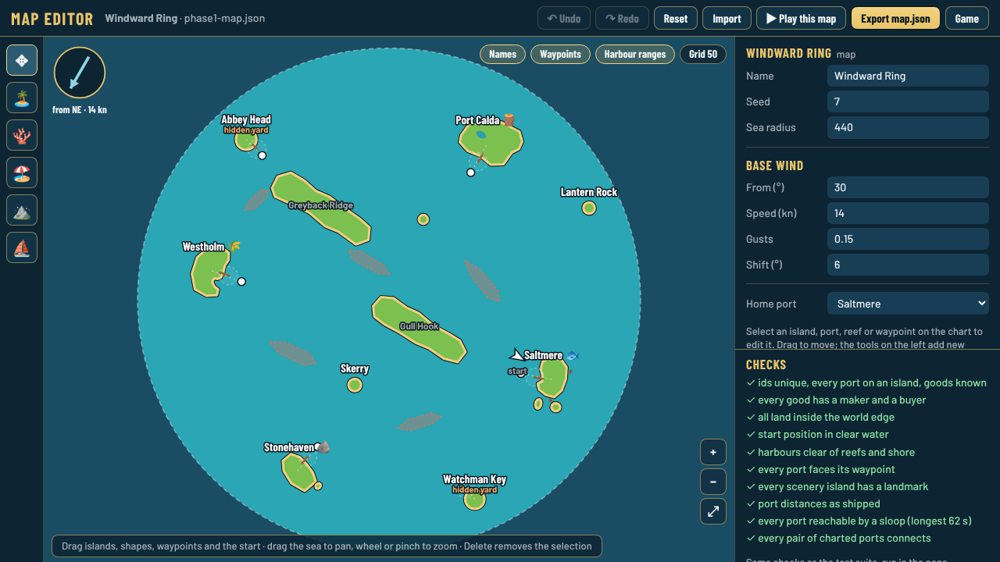
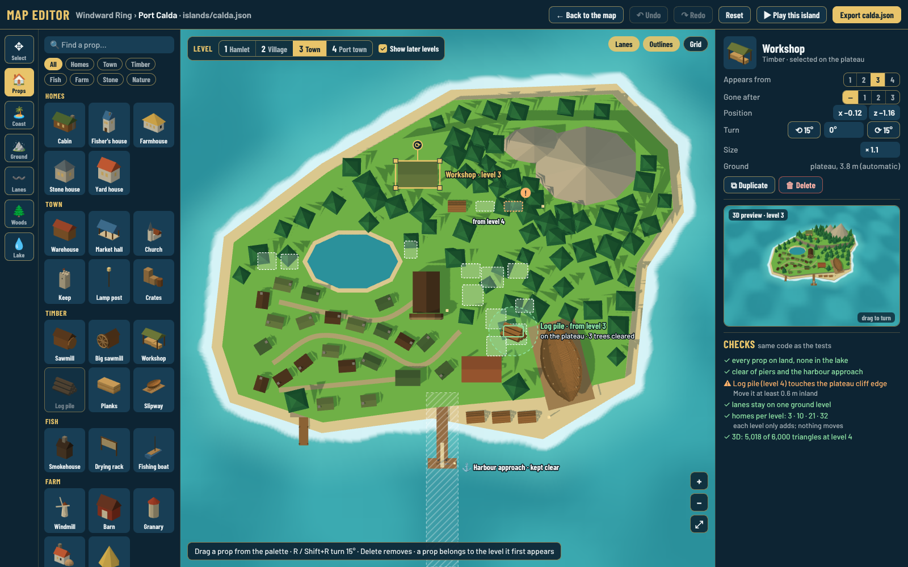
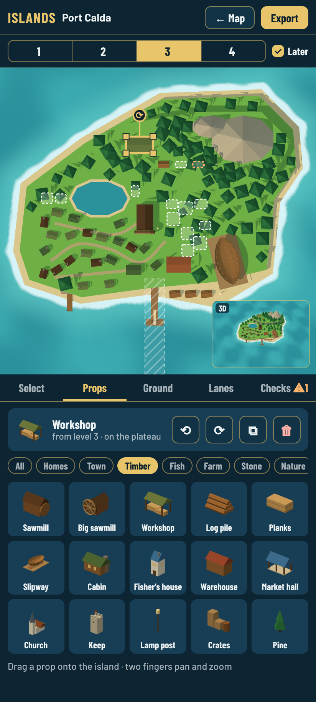
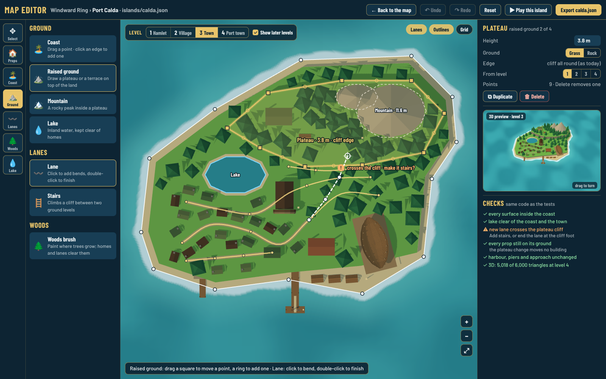

double-click · or ✎ Edit island in the panel

The map editor stays as it is. Double-clicking a port island zooms into its own builder; ← Map goes back.

34 building and prop types from today's towns. Each one appears from a level (1 to 4) and can go at a later one. Later levels show dashed.

Island on top, tabs and palette below, 3D preview in the corner.

Reshape the coast, raised ground (plateau, cliff edge), mountain, lake; draw lanes and stairs; paint woods.
✓ every prop on land, out of the lake
✓ clear of piers and the harbour approach
⚠ not on a cliff edge (amber says where)
✓ lanes don't cross water or cliffs (or use stairs)
✓ each level only adds, nothing moves
✓ triangle budget for old phones: 6,000 per island at level 4
Export calda.json → upload on GitHub, CI runs every test. ▶ Play this island opens the game on a separate save.